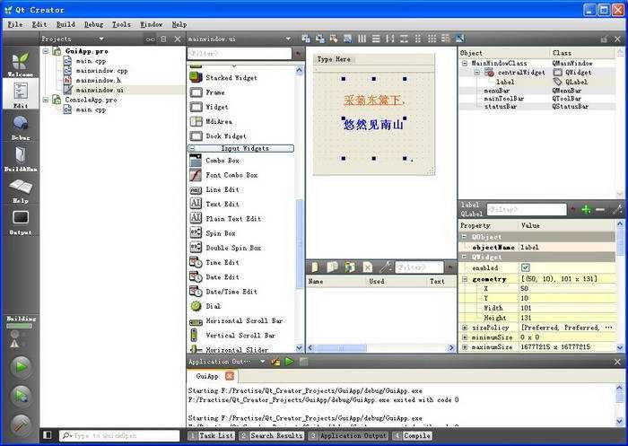

Web学习日志1——HTML/CSS基础
摸鱼日志-0x00
(这编号起的好像我能摸出256篇日志一样)XTH的HTML与CSS学习日志！(其实啥也不会)
2019-7-2 19:00:23
第一次正式学习HTML以及CSS，之前在高中时代就摸鱼式学习过关于HTML的一些入门知识，也通过模(chao)仿(xi)制作过一些小网页。
HTML作为一种兼容性强、鲁棒性强的语言，其优点是支持非常广泛的功能，且对于一些不良代码有很强的适应能力。它的这一特性使得了当一部分代码出现问题或者网页的某一部分发生崩溃时，只要编写代码时设置合理，一般可以保证网页的其他功能正常运行。

在尝试编写这个个人主页时，发现HTML的功能设置和之前学习的Qt有很大的相似之处，尤其是布局管理方面，通过回忆Qt的语法很大程度上对理解CSS的模式有很大的帮助。但同理也会带来一些它们所共同具有的问题，如强大的功能和多种设置方式导致往往在不熟悉语法结构时容易通过多种形式对统一构件进行配置，导致一些错误。
类似于Qt，HTML也支持一些图形化的编程界面，这种所见即所得的方式提高了网页开发的效率，但也需要对代码有一定了解后才能熟练使用。